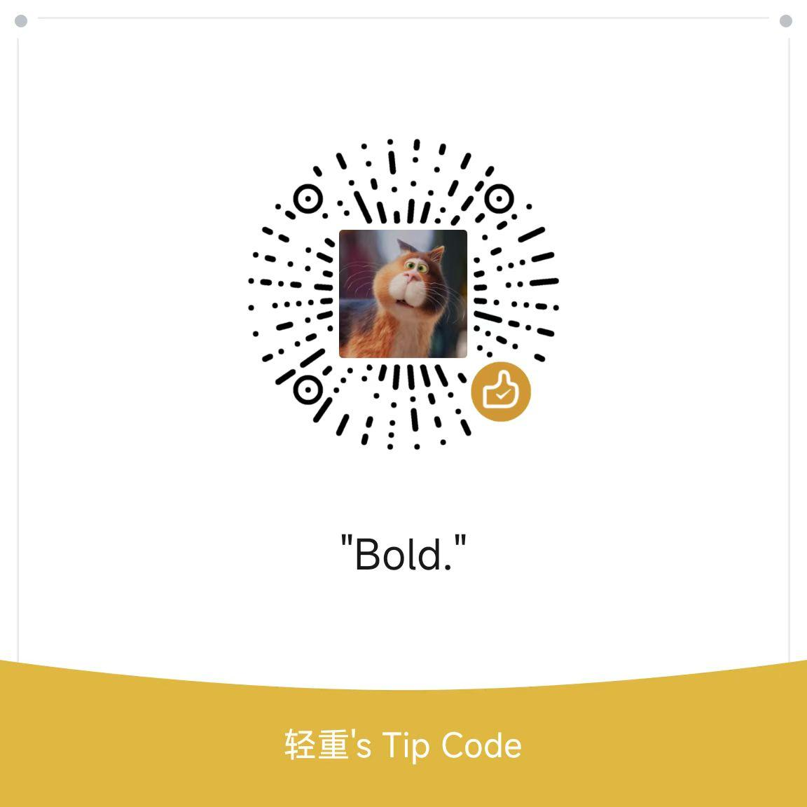

关于我
人总是在变。
2024年11月25日
依赖自觉、自我低估，被动地生活了8年之后，突然无法忍受这种痛苦。大量的阅读，积极地反思，我发现了那些我无法控制的力量和事物。那是从小养成的生存心态，改变哪会如此轻而易举。只是意识到这个以后，我不再责怪别人和自己。慢慢接受现在，和自己和解，然后试着勇敢地做自己。想要什么就要主动去争取，做自己喜欢的事情，也就一定会遇到志同道合的伙伴和彼此吸引的伴侣。如果害怕，就不会有所改变。孟子说：“自反而缩，虽千万人，吾往矣”。自信、勇敢，才能一往无前！
2022年4月13日
从小直到现在，每逢过年的时候，家里都会带着蜡烛、线香、纸钱、火炮儿去山里给去世的“老辈子”拜年。除此之外，我们家还会去观音庙拜菩萨、拜土地公和土地婆。没想到，在重庆这样一个偏远的小山村里面，“儒佛道”竟然融合地如此和谐。
大概就是小时候这些无意识的影响，“儒道佛”都有思想落在了我的脑子里，但却依然是以儒家为主轴。特别是看了李泽厚的《人类学历史本体论》后，我更是坚信了自己的“儒生”身份。以乐观的心态，不断发展和变化、包容和吸收，肯定人的存在和生活，时刻反省，珍惜此在，让时间融化在情感里，从而达到一种审美-天地的超越心境吧。
- 发愤忘食，乐以忘忧，不知老之将至云尔。
为我加个鸡腿
